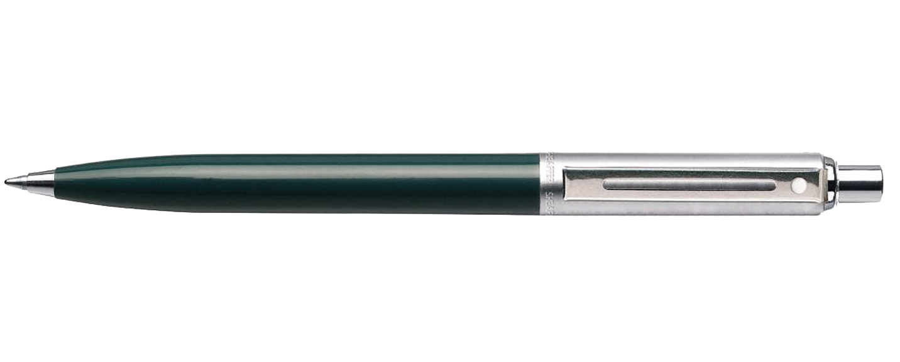
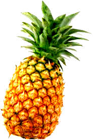
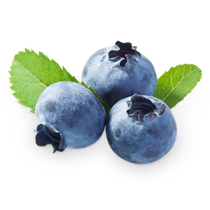
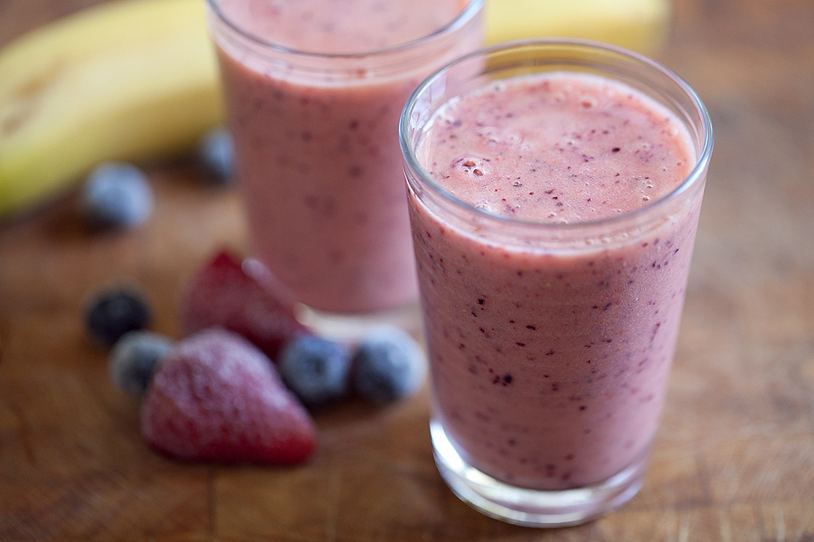

Menu
jQuery's fancy DOM manipulation can help us build a dynamically generated table of contents as the user upload their input, as shown on the right of the page.
-
Apple

The apple tree (Malus pumila, commonly and erroneously called Malus domestica) is a deciduous tree in the rose family best known for its sweet, pomaceous fruit, the apple. It is cultivated worldwide as a fruit tree, and is the most widely grown species in the genus Malus. The tree originated in Central Asia, where its wild ancestor, Malus sieversii, is still found today. Apples have been grown for thousands of years in Asia and Europe, and were brought to North America by European colonists. Apples have religious and mythological significance in many cultures, including Norse, Greek and European Christian traditions.
-
Pen
A pen (Latin: penna, feather) is a writing implement used to apply ink to a surface, such as paper, for writing or drawing. Historically, reed pens, quill pens, and dip pens were used, with a nib dipped in ink. Ruling pens allow precise adjustment of line width, and still find a few specialized uses, but technical pens such as the Rapidograph are more commonly used. Modern types also include ballpoint, rollerball, fountain, and felt or ceramic tip pens.
-
Pineapple
The pineapple (Ananas comosus) is a tropical plant with an edible multiple fruit consisting of coalesced berries, also called pineapples, and the most economically significant plant in the Bromeliaceae family.
-
Apple Pencil
The Apple Pencil features pressure sensitivity and angle detection. Encased in a plastic housing is a Bluetooth device that can communicate simultaneously with the screen and the system underneath it. The Pencil can detect force, allowing, for example, darker or lighter strokes in a drawing app depending on how hard the user presses.
-
Banana

The banana is an edible fruit – botanically a berry – produced by several kinds of large herbaceous flowering plants in the genus Musa. In some countries, bananas used for cooking may be called plantains, in contrast to dessert bananas. The fruit is variable in size, color and firmness, but is usually elongated and curved, with soft flesh rich in starch covered with a rind which may be green, yellow, red, purple, or brown when ripe. The fruits grow in clusters hanging from the top of the plant. Almost all modern edible parthenocarpic (seedless) bananas come from two wild species – Musa acuminata and Musa balbisiana. The scientific names of most cultivated bananas are Musa acuminata, Musa balbisiana, and Musa × paradisiaca for the hybrid Musa acuminata × M. balbisiana, depending on their genomic constitution. The old scientific name Musa sapientum is no longer used.
-
Blueberry
Blueberries are perennial flowering plants with indigo-colored berries from the section Cyanococcus within the genus Vaccinium (a genus that also includes cranberries, bilberries and grouseberries). Species in the section Cyanococcus are the most common fruits sold as "blueberries" and are native to North America (commercially cultivated highbush blueberries were not introduced into Europe until the 1930s).
-
Berry Banana Smoothie
A smoothie (occasionally spelled smoothee or smoothy) is a thick beverage made from blended raw fruit or vegetables with other ingredients such as water, ice, dairy products or sweeteners.